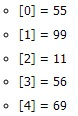
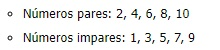
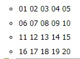
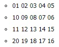
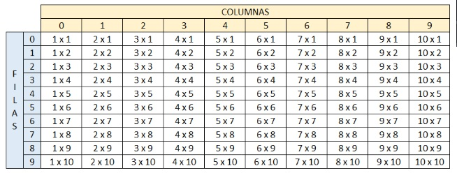

1. Crear un vector de tipo Entero con 5 posiciones, llenarlo con información solicitada al usuario. Después de recoger toda la información, se requiere imprimir el índice de cada posición en el arreglo con su valor de la siguiente manera:.


2. Crear un arreglo de números enteros de 20 posiciones, el cual, debe ser llenado con números aleatorios entre 1 y 100; después de haber llenado dicho arreglo, se debe volver a recorrer utilizando un ciclo diferente al que se usó para llenarse e imprimir los números pares e impares. Ejemplo


3. Imprimir los números primos del 1 al 1000, el resultado debe ser buscado de forma matemática.


4. Dada la siguiente matriz bidimensional, el cual debe de quemar en el código
Utilizando el conocimiento adquirido, a excepción de hacerlo de forma manual, imprima la siguiente matriz bidimensional.


5. Se debe de imprimir el siguiente cuadro
